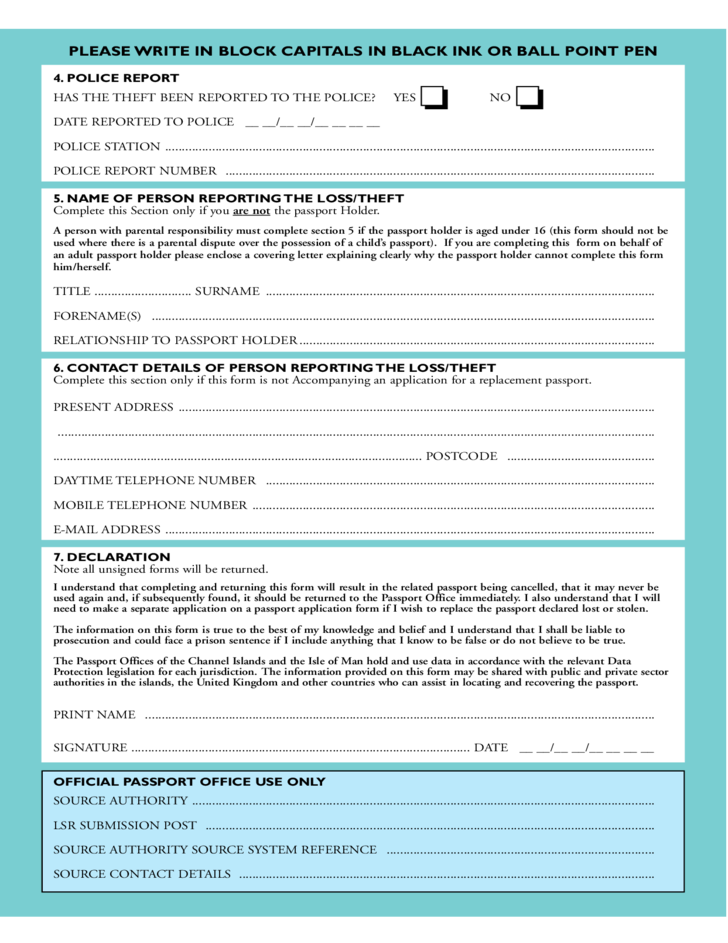
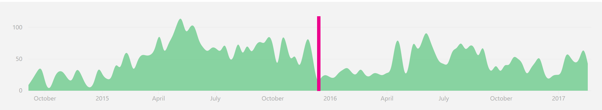

Angular2 Angular adoption
from an early stage
Wherewolf
Queenstown
Indemity Forms & Liability Waivers
Adventure Tourism
ExpressJS / Postgres / jQuery Mobile / Angular

For Office
Use Only
- Manifests & Trips with
assigned staff / equip. - Weight & Balance
- Demographics and analysis
- Frontend for Digital Marketing tools (email / SMS)
Angular
Angular 1.x
Angular 2
Angular

Up to date
vs
out of date
Evergreen Software
- Chrome / Firefox / Edge
- Adobe Thingymajigs
- Debian Unattended Upgrades
Reluctance to update

SemVer
Semantic Versioning
SemVer aims to
provide predictability*
* unless you're in alpha
or Google
* unless you're in alpha
or Google

Breakages include:
BlSOD / WSOD / Stackless
Method/Property Rename
`sed -ie s/oldMethod/newMethod/g foo.js`
Method returns different results
Deprecation
From which we learnt
(Responsibly)
- Manual
- Source
- ChangeLog
Turn on all errors (NewRelic + Emails)
Testing (responsibly)
Read smart things
Angular is (now) ready
Wherewolf is hiring
Semi-sane tech stack
jobs@wherewolf.co.nz